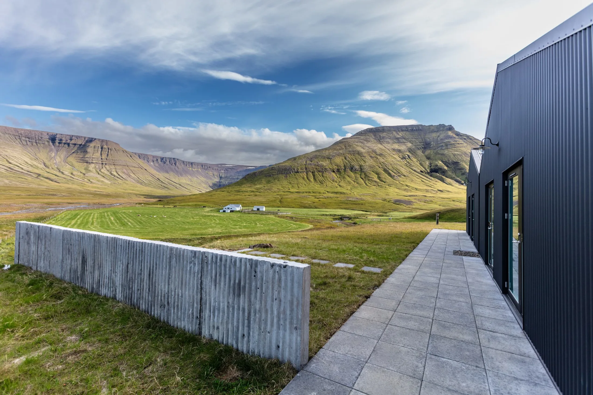
The mountain pass,
35 minutes from Reykjavík
Kleif
Born and raised here
The farm belongs to my parents. I was born and raised here, and when the old farmhouse fell quiet we rebuilt it with architects, in wood and terracotta, so guests could live our side of Iceland with the horses and sheep right outside the door.
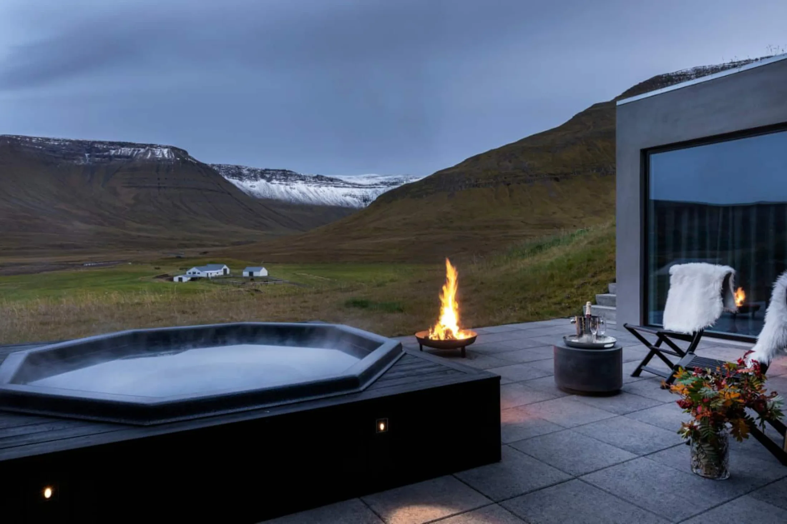
Our seasons
Most guests come between May and October, when the daylight barely ends. The family’s own favourite is late August, when the farmhouse turns cosy. Winter is a wonderland of its own.
- May to OctMidnight sun, daylight around the clock in midsummer
- Late AugustThe cosy season, the family’s favourite
- WinterA wonderland; a 4WD is strongly recommended
Days at Kleif
Everything below is on the estate, or arranged by the family, whose summerhouse is two minutes from the main house.
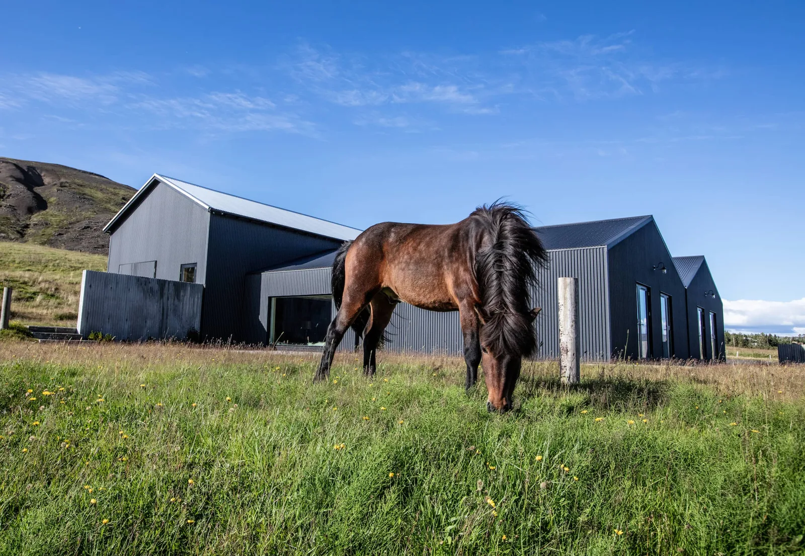
The resident horses
Horses and sheep roam the property, and the family will introduce you.
Horses
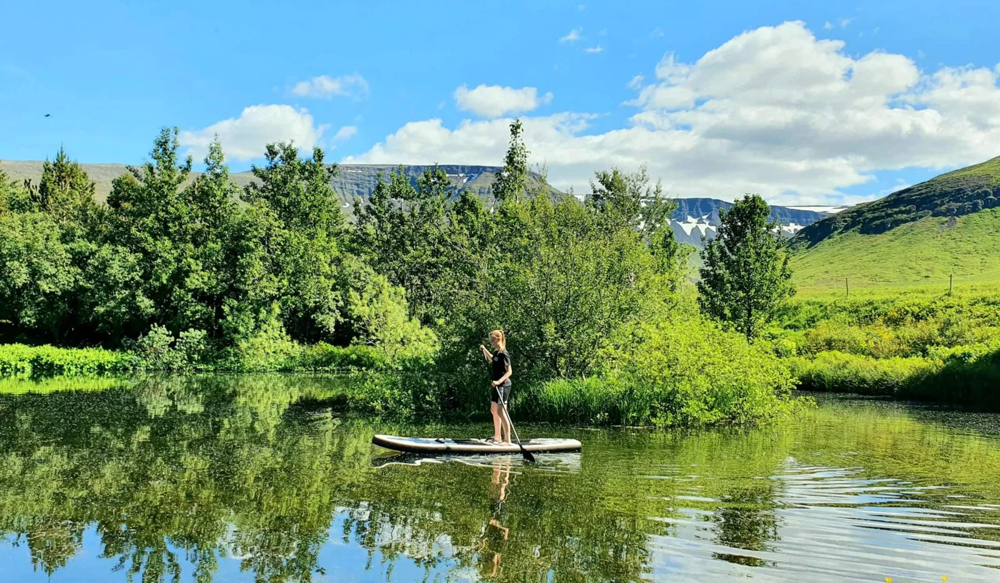
The pond
A small pond in a beautiful garden, with paddle boards and a rowing boat for the children.
The pond
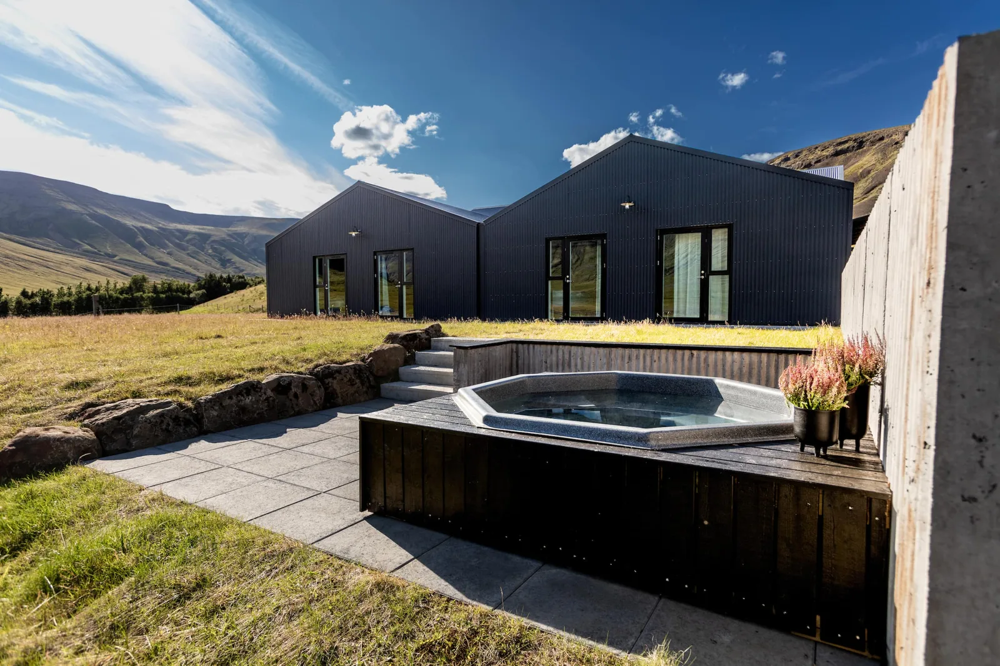
The hot tub
Sunk into the terrace below the house, looking straight down the valley.
Hot tub
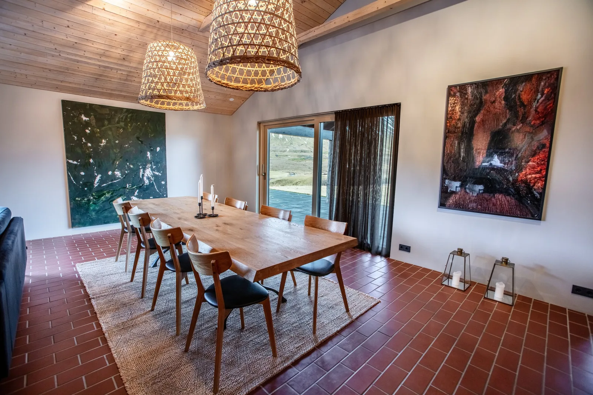
Dinner by the owner
A private chef can work in the second kitchen, or the family cooks dinner themselves.
Dinner
Hikes from the door
Trails lead straight into the surrounding mountains, and Iceland’s highest waterfall is twenty minutes away.
Hikes
“It’s like being out in nature while having a luxurious base to relax.”
One farm, three houses
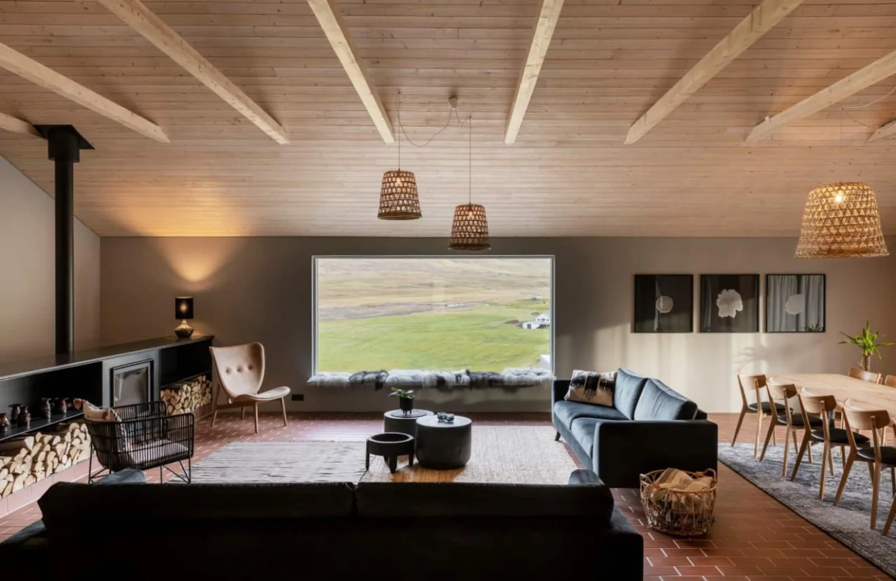
The Farmhouse
The rebuilt main house sleeps ten in five en-suite bedrooms, with a panoramic window the length of the living room and two kitchens. Let on an exclusive basis.
[ N64 17.573 W21 40.033 ]
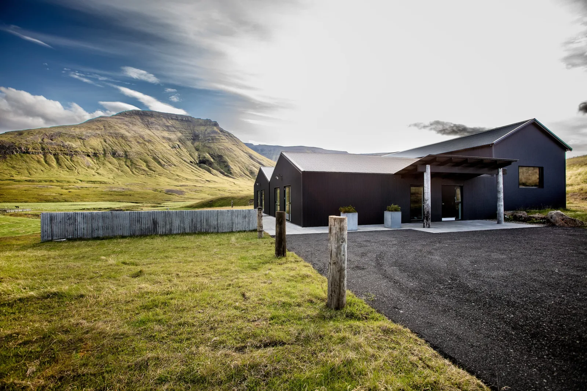
The Villas
New-build villas behind turf-topped walls at the edge of the field, with a hot tub sunk into the terrace.
[ N64 17.573 W21 40.033 ]
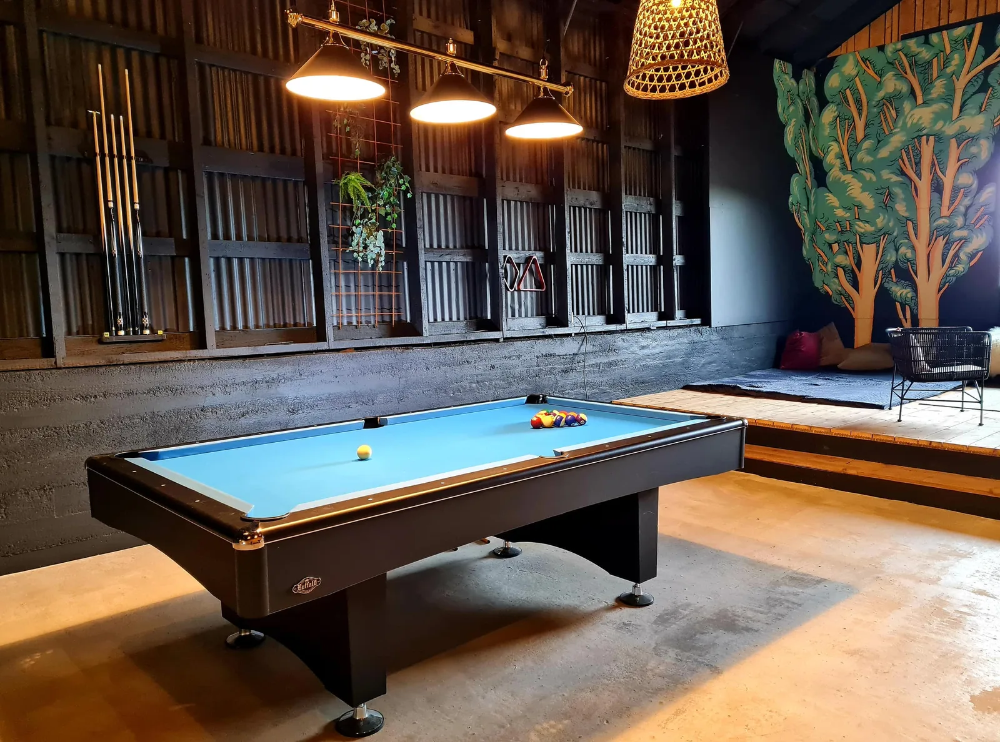
The Barn
A renovated barn with cosy en-suite rooms and a game barn for the evenings.
[ N64 17.573 W21 40.033 ]
Guests rate every house at Kleif 5.0, and Airbnb counts the farm among its top five percent.
64° 09' N 21° 57' W
Reykjavík
Over the pass
From Reykjavík the road runs north and turns inland into Kjós. Kleif means the mountain pass, and the farm sits beneath it.
N64 17.573 W21 40.033
Kleif
RVKKLF
64° 09' N 21° 57' W
Reykjavík
Leave the city northbound; the whole drive is thirty-five minutes.
Mosfellsbær
The last supermarkets before the farm, twenty minutes out. Stock up here.
Into Kjós
The road narrows between the fells, and the sheep stop noticing cars.
N64 17.573 W21 40.033
Kleif
Park at the gate. The family’s summerhouse is two minutes away if you need anything.
- 35 minfrom Reykjavík city centre
- 20 minto Glymur, Iceland’s highest waterfall
- 90 kmfrom Keflavík International Airport
The rebuild
Rebuilt, not replaced
The old farmhouse was completely rebuilt with the help of architects, in natural materials, wood and terracotta the whole way through. Simple, warm and modern, the way an Icelandic farmhouse feels when it is honest about what it is.
- Bedrooms
- Five, all en-suite
- Main house
- 330 m²
- The farmhouse
- Let on an exclusive basis
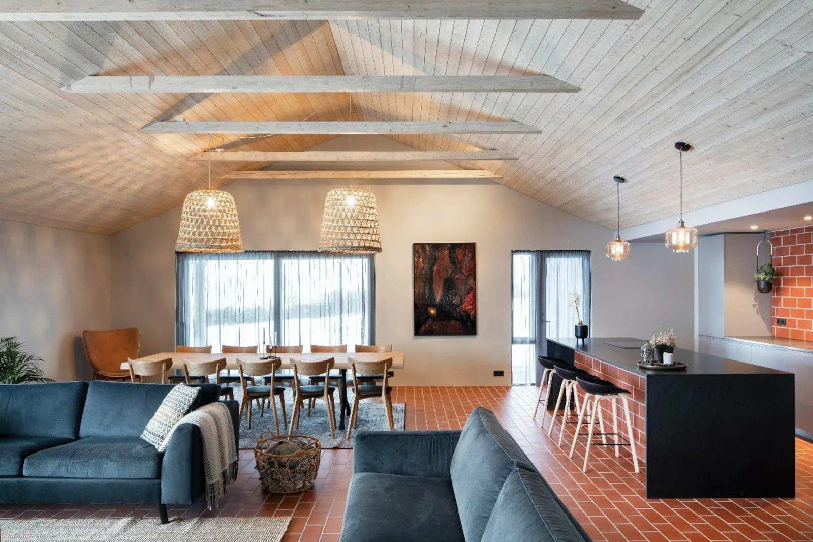
The table is yours
The house is set up for self-catering, with a second kitchen where a chef can work without disturbing anyone. Ask, and the family arranges the rest.
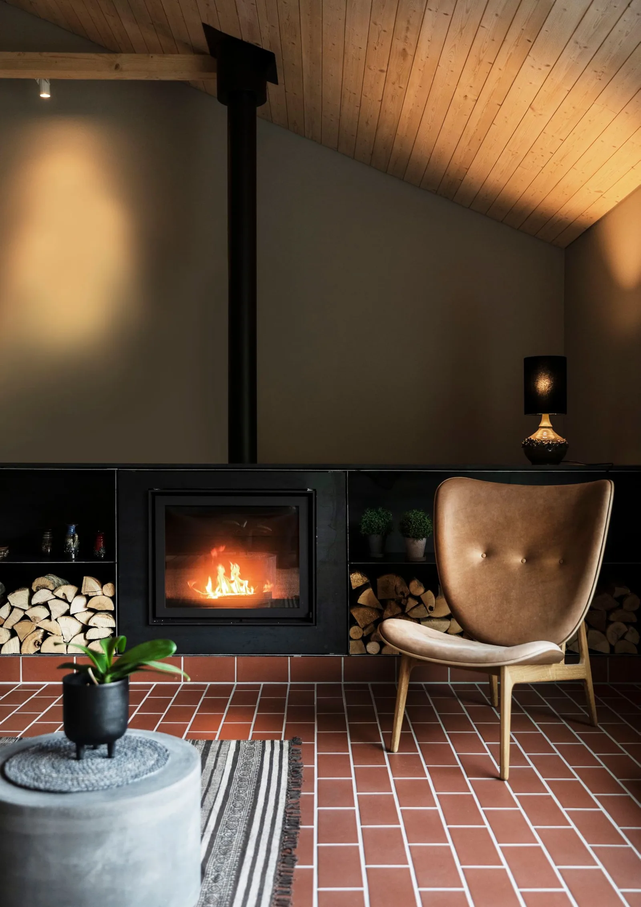
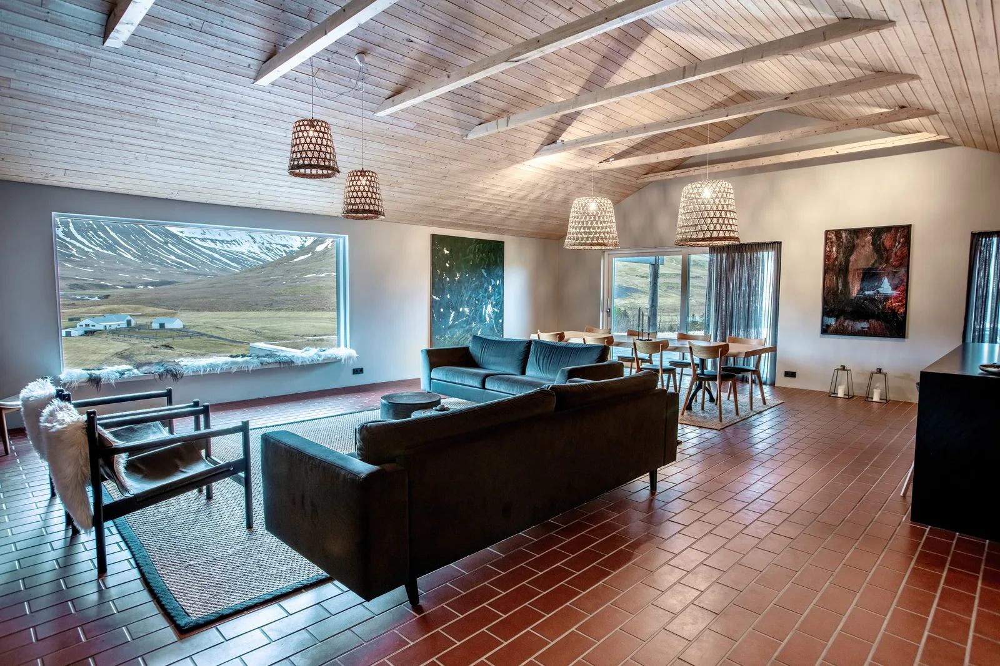
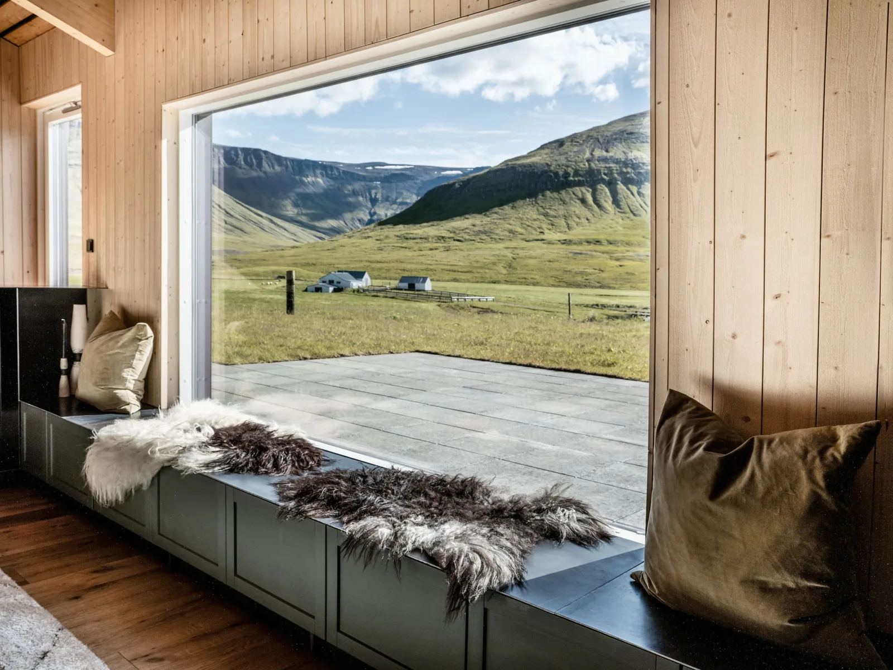
Rates are on a self-catering basis. The nearest supermarkets are twenty minutes away in Mosfellsbær.
Ask for your dates
Pick a house and your dates, and the request goes straight to the family. No card and no charge; they confirm each stay personally.
- 34 guestsacross the three houses, by their own listings
- No carda request, not a charge; the family confirms
- Smaller groupscan ask about reduced rates, as can last-minute stays
Request sent
Thank you. The request is with the family and they confirm each stay personally. Nothing is charged now.
Reference